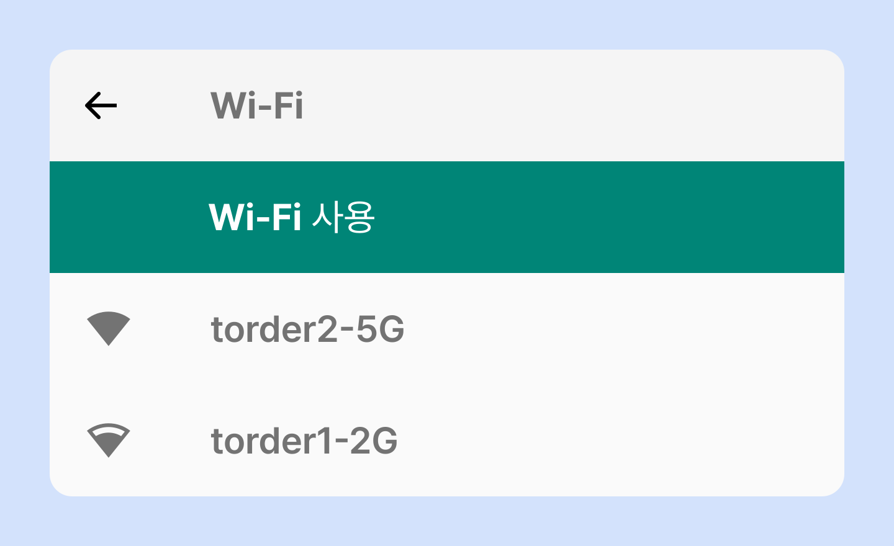

와이파이 설정
매장 내 각 티오더 태블릿이 설치된 위치 및 환경에 따라 torder ‘5G’ 또는 ‘2G’로 연결해야 해요.

1
5G-WIFI
- 강한 신호 / 좁은 범위
- 공유기와 태블릿 사이에 장애물이 적은 환경에서 사용되며 빠른 속도로 2G 와이파이보다 쾌적하게 이용하실 수 있어요.
2
2G-WIFI
- 일반 신호 / 넓은 범위
- 대중적으로 많이 사용되는 와이파이에요.